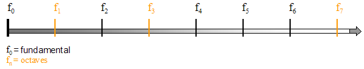
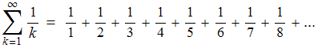

| Sounds that are made on a musical instrument are constrained by the particular ways in which the specific instrument can vibrate. |
| Vibrating strings and columns of air produce not only fundamental frequencies (fundamentals), but also harmonics, frequencies that are integer multiples of the fundamental. |
| The relative intensities of these harmonics, or overtones, impart the predominant flavor to the instrument's characteristic sound, or timbre. |
|  |
| Because the frequency of a sound is inversely proportional to its wavelength, the integer relationship between the fundamental and its overtones can be alternatively stated as a function of wavelength. |
| This relationship then takes the form of the familiar harmonic series: |
|  |
| Indeed, the collection of these overtones is referred to in acoustics as the harmonic series. |
Return to music theory.